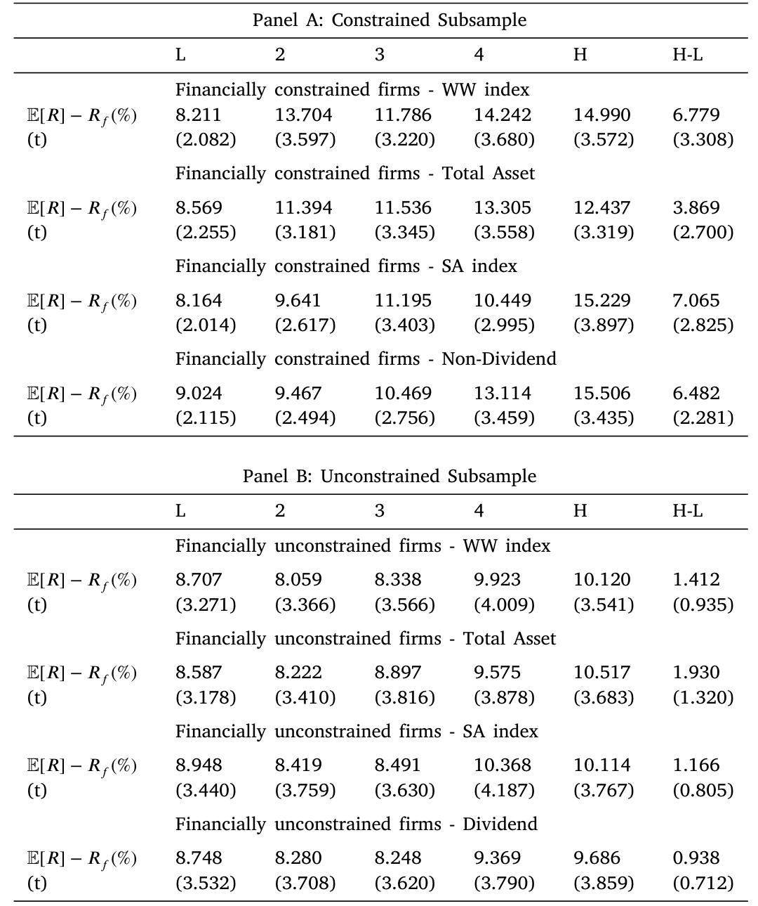
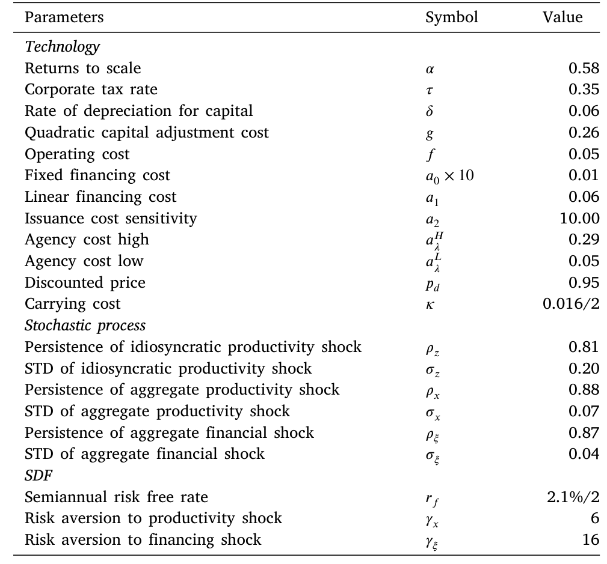
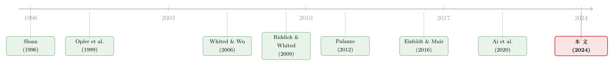

公司为什么偏要等到年底才「收钱」？——把现金流的时间表写进资产定价
本文读的是 Hu, Li & Zhang (2024, Journal of Financial Economics)：美国上市公司近 70% 的经营现金流集中在下半财年收回；而那些「把更多现金拖到年底才收」、同时本就受财务约束的公司，每年要多赚约 6.8% 的风险溢价，并且存下更多现金。作者用一个动态投资型资产定价模型把这一切串了起来——年底收现，不是会计上的小动作，而是企业在「利润」与「融资成本」之间做的一次理性权衡，并因此把自己更深地暴露在总体生产率与融资冲击之下。
1 一个被忽略的「时间表」
先问一个看起来无关紧要的问题：一家公司一年里的现金，是均匀地、一笔一笔流进来的吗？
直觉上我们会觉得，收入是平滑的，旺季淡季有差别，但大体是个连续的过程。可如果你真的把美国上市公司的季度现金流摊开来看，会发现一个相当扎眼的规律：现金流的到账时间高度不对称。平均而言，公司在上半财年（Q1+Q2）只收到全年现金流的约 30%，而把将近 70% 都压到了下半财年（Q3+Q4）才收回来。更耐人寻味的是，这个「下半年才收钱」的模式不是某一年的偶然，它在 1987 到 2021 年的几十年里稳稳地存在着。
大多数关于现金流波动的研究——从 Minton and Schrand (1999) 到 Bates et al. (2009)——盯的是外生的现金流冲击：经济不好了、行业变天了，现金流被动地抖了一下。但 Hu, Li and Zhang 这篇文章问的是一个反过来的问题：如果现金流的时间表本身，是公司自己选出来的呢？
这就是全文的核心张力所在。一旦「年底集中收现」是一个内生决策，那它就一定对应着某种取舍；而只要有取舍，它就可能被定价。论文给这个决策起了个名字，叫 年底收现 (year-end cash collection, YCC)，并且一路追问下去：什么样的公司更爱这么做？这么做的公司，股票回报会不一样吗？
答案是会，而且差得很大。
2 四个事实：从「时间表」到「风险溢价」
论文先用四个层层递进的经验事实，把读者的胃口吊起来。
首先，时间表本身在总量层面就稳定存在——这就是上面那张图说的事。
接着，一个自然的问题是：是不是所有公司都一样爱拖到年底？不是。作者用 Whited–Wu 指数 (WW index, Whited and Wu, 2006) 把样本切成受约束与不受约束两组，比较它们的 经营现金流季节差 (operating cash flow spread, OCF spread)——也就是下半年现金流减去上半年现金流（都除以滞后总资产）。结果是：财务受约束的公司，OCF spread 是 0.029；不受约束的公司只有 0.021；两者相差 0.008，在 1% 水平上显著。
$$ \text{OCF Spread} = \text{Late OCF} - \text{Early OCF} $$
别小看这 0.008——它说明越是缺钱的公司，越倾向于把现金留到年底才收。这是一条关键线索：YCC 和财务约束是正相关的。
然后，真正的好戏来了：把这个「年底收现」拿去解释股票回报。这就引出了第三个、也是最核心的事实——年底收现溢价 (YCC premium)。
但真正关键的一步在于第四个事实：这个溢价并不是单纯由存货增长（Belo and Lin, 2012）或贸易信用效应（Grigoris et al., 2023）驱动的——作者把 YCC 拆开后发现，主要推手是存货与应收账款在年内的季度差（INVT Q2–Q4 与 RECT Q2–Q4），二者合起来解释了 YCC 横截面变异的约 50.5%。换句话说，这是一个干净的、有自己经济内涵的新维度，而不是旧异象换了身马甲。
3 怎么量「年底收现」：一个简单却讲究的指标
要把故事讲下去，先得把 YCC 量出来。论文的定义朴素得有点出人意料——它就是非现金净营运资本从财年 Q2 到 Q4 的下降，再除以滞后总资产：
这里的逻辑非常清楚：非现金净营运资本装的是那些「已经做成生意、但还没收到钱」的部分（应收账款、存货等）。如果一家公司在 Q2 到 Q4 之间把这部分大幅压下去，就意味着它在年底前集中把「在途的收入」变成了真金白银——NWCQ2 − NWCQ4 越大，YCC 越高，年内现金流的波动也越大。
非现金净营运资本，论文里定义为非现金流动资产（ACT − CHE）减去流动负债（LCT）、再去掉短期债务（DLC）与应交税金（TXP）。盈利能力用 ROA（Compustat 的 IB）衡量，经营现金流则按 Lian and Ma (2020) 用 OANCF + XINT 构造。
数据这边，主样本覆盖 1988–2022 年，来自 CRSP/Compustat 合并库，发行费用取自 SDC Platinum。作者按惯例剔除了受管制的公用事业（SIC 4900–4999）与金融业（SIC 6000–6999），只保留在 NYSE/Amex/Nasdaq 上市、IPO 满一年的国内普通股，并按 Almeida et al. (2004) 的口径剔掉现金超过总资产、或资产/销售增速超过 100% 的公司，最后按 Shumway (1997) 修正退市偏差。财务约束则同时用四个代理变量交叉验证：WW 指数、公司规模、规模–年龄指数 (SA index, Hadlock and Pierce, 2010)，以及不分红虚拟变量。
4 主要结果：6.8% 的「年底收现溢价」
现在把公司按 YCC 从低到高分成五组，看看回报。
单变量排序就已经很有看头了（Table 2）：最不爱年底收现的那组（L），价值加权年化超额收益是 8.321%；最爱的那组（H）是 11.740%；多空组合 H−L 的价差为 3.419%（t = 2.334）。等权口径下差距更大，从 11.480% 到 14.576%，价差 3.096%（t = 4.410）。
但论文真正想强调的是：这个溢价几乎全部来自财务受约束的那一半公司。当作者先按财务约束分组、再在各组内部按 YCC 排序时，反差极其鲜明。

Table 3: reports annualized average excess stock returns across
如表 3 的 Panel A 所示，在用 WW 指数定义的受约束子样本里，H−L 价差高达 6.779%（t = 3.308）——这正是摘要里那个 6.8% 的来历；换成 SA 指数，价差甚至到 7.065%（t = 2.825）；用总资产、不分红口径也分别有 3.869% 和 6.482%，全都显著。而 Panel B 的不受约束子样本呢？四个口径下的 H−L 分别只有 1.412%、1.930%、1.166%、0.938%，t 值统统不到 1.4——一个都不显著。
这种「受约束有、不受约束无」的对照，比一个笼统的正系数有说服力得多。它把 YCC 溢价牢牢地钉在了「财务约束」这根钉子上。Fama–MacBeth 回归进一步坐实：在控制了一系列预测股票回报的公司特征之后，受约束公司的 YCC 每上升一个标准差，对应的预期股票回报上升 1.370%；而在不受约束的子样本里，这个斜率并不显著。
于是反转出现了：一个看似纯粹会计层面的「收款时间表」，竟然干净地预测了横截面的股票回报，而且只在最缺钱的那群公司身上生效。问题随之而来——为什么年底多收钱的公司，反而更「危险」、要给投资者更高的补偿？
5 模型：年底收现，是在「利润」和「融资成本」之间走钢丝
要回答这个问题，光靠回归不够，得有一个能内生地生出「YCC—财务约束—风险溢价」三角关系的结构模型。这正是论文最见功力的部分：一个动态投资型 (dynamic investment-based) 资产定价模型。
模型里的公司用一项随机技术生产，同时承受异质性与总体生产率冲击；此外还有一类与生产率冲击相互独立的总体发行成本冲击 (aggregate issuance cost shock)。公司要在投资、存现、收现、股权融资和分红之间做选择，以最大化自身价值。异质性冲击负责制造横截面差异。整个机制建立在三块基石上：
第一，卖货不等于立刻收到现金。 要求客户当场付现是有代价的——供应商必须给一个可观的折扣作为「付现奖励」。所以,索要更多即期现金，会直接拖累盈利能力。这解释了为什么高 YCC 公司的 ROA 反而更低。
第二，也是全文的灵魂：股权发行成本是「收现」的函数。 未收回的收入（unpaid revenue）越多，盈余的信息透明度越低（Sloan, 1996；Francis et al., 2004），外部投资者越看不清公司质地，股权融资就越贵。反过来，年底前多把现金收回来，等于主动降低信息不对称，把融资成本压下去。
第三，年底有一次「注意力的制度性切换」。 文献早就指出，财年末的盈余报告会吸引格外多的关注（Frankel et al., 2017）。于是把上面三块拼起来，逻辑就闭合了：财务受约束的公司融资需求大，又恰好在「众目睽睽」的年底最该把账做漂亮——它们因此有最强的动机在年底集中收现，以提升透明度、压低即将到来的融资成本。
那「风险」从哪来？论文给了两个互相叠加的渠道。其一，高 YCC 公司为当期销售索要了更多即期现金，它们的未来现金流更依赖即期支付，因而对总体生产率冲击的暴露更正。其二，今天多收的现金，意味着下一期经营现金流被「透支」、更可能要去市场上发股票，于是对总体融资冲击的暴露也更正。两个正暴露加在一起，就是更高的系统性风险，也就要更高的回报来补偿。
这里和 Palazzo (2012) 的直觉一脉相承：当预期边际融资成本与贴现因子正相关（即融资最贵的时候恰逢边际效用最高），现金的边际价值就会上升——所以越「危险」的公司越要存现。本文把这个逻辑从单纯的总体生产率冲击，扩展到了融资成本冲击这一维。（关于「越危险越要存现」的另一面，可参见《把风险揣进兜里：企业为什么主动持有有风险的金融资产？》。）
把模型校准到合理的参数后，它能同时贴合资产价格与实际数量的总量与公司层面矩。尤其值得一提的是，作者构造的两因子模型（总体 TFP 冲击 + 总体发行成本冲击）不仅复制出了观测到的 YCC 价差，还顺带复制出了 CAPM 的定价误差——也就是说，模型预测了 CAPM 在这批公司上「会错到哪里去」，而这个错法恰好与数据吻合。

Table 4: shows the calibration of our model parameters. We care-
如表 4 的校准所示，基准经济在合理取值下，再现了高 YCC 公司「更高回报、更大 OCF spread、更低 ROA、更多存现」的整套特征组合——这些都是在模拟数据里内生涌现的，而非外生塞进去的。用 GMM 估计标准资产定价方程后，总体 TFP 与发行成本冲击在横截面上都被显著且正向地定价（注意：正向的发行成本冲击反而降低了公司融资成本）。
（这类「投资型资产定价模型到底拟合得有多稳」的话题，本身就是一个值得警惕的方向，可参见《一个「成功」的模型，为什么经不起逐年对账？——重估投资基础资产定价》。）
6 文献脉络
把这条线索往回捋，会看到三股河流在本文交汇。
最上游是 盈余质量与会计异象：Sloan (1996) 告诉我们，应计项目（也就是「未收回的收入」）里藏着关于未来盈余的信息，市场常常没读懂。再往下是 公司现金与财务约束：Opler et al. (1999) 奠定了现金持有的决定因素，Whited and Wu (2006) 给了我们度量约束的指数，Riddick and Whited (2009) 证明公司因约束与冲击而存现，Hadlock and Pierce (2010) 补上了 SA 指数。第三股是 投资型资产定价：从 Zhang (2005) 的价值溢价、Li (2011) 的约束与 R&D，到 Palazzo (2012) 把现金的风险维度引入横截面，再到 Eisfeldt and Muir (2016) 强调时变的总体融资成本、Ai et al. (2020) 的抵押品溢价。

本文站在这三股河流的下游：它把「年底收现」这个新的、内生的会计行为，端到端地接上了股权发行成本与系统性风险，从而在现金、约束、与横截面回报之间补上了一条此前文献「人人知道、却没人量化」的链条。
7 评论与延伸（Q&A + 研究方向）
(a) 几个可能的疑问
Q：YCC 不就是「应计异象」（accrual anomaly）换了个名字吗？
不是。应计异象比的是全年的应计水平，反映的是盈余被高估/低估的程度；YCC 比的是同一年内 Q2 与 Q4 之间净营运资本的变化时点，刻画的是现金到账的「时间表」。论文专门验证了：在控制 Sloan (1996) 的应计效应、以及 Palazzo (2012) 的现金溢价之后，YCC 价差依然存在。
Q：会不会只是「年底冲业绩」的盈余管理，跟风险无关？
这正是最该担心的替代解释。作者用 SDC Platinum 的发行费用数据直接证明：下半年的融资成本确实更高，且未收回收入显著抬高了线性融资成本、在年底影响尤甚。这把「透明度—融资成本」这条机制坐实在了真实的发行价格上，而不仅仅是一个回归相关性。
Q：溢价集中在受约束公司，会不会只是因为这些公司本来就更小、更高风险？
论文的设计恰恰是先按约束分组、再在组内排序，所以比较的是「同样受约束、只是 YCC 不同」的公司。而且四个互相独立的约束代理（WW、规模、SA、不分红）给出一致结论，单一规模故事很难同时解释这四种切法。
Q：为什么「正向的发行成本冲击」反而降低融资成本？
这是个容易被符号绕晕的地方。论文在脚注里特意说明：他们定义下的正向总体发行成本冲击，对应的是融资环境变好、公司融资成本下降的状态。所以它被正向定价，意味着投资者愿意为「在融资宽松时也能多赚」的暴露买单——逻辑是自洽的，只是符号约定需留心。
Q：高 YCC 公司同时「存更多现金」，这和「年底拼命收现」不矛盾吗？
不矛盾，反而是同一枚硬币的两面。未收回收入与现金持有之间存在替代关系（Opler et al., 1999）：年底正是未收回收入被「管」得最紧的时候，公司于是用现金替代在途收入。所以高 YCC 公司在下半年既收了更多现金，又把更多现金留在手里——因为它们下一期的融资需求更大、对总体融资冲击更敏感。
Q：这套结论能外推到不披露季度数据、或财年定义不同的市场吗？
值得怀疑。整个识别依赖「季度财务数据 + 财年末注意力骤增」这两个前提。在季度披露不强制、或财年终点与税务/监管周期错配的市场，YCC 的度量和那次「注意力切换」都会被稀释，溢价未必照搬。
(b) 几个可能的研究问题与提案
1. 把 YCC 搬到公司债与信用利差上。 【经济故事】如果年底收现降低了信息不对称、压低了股权融资成本，那它同样应当压低债务融资成本——高 YCC 是否对应更窄的信用利差、更低的债券收益率？这把一个股票横截面的故事直接推向信用市场。 【可行性】高。用 TRACE 的公司债成交 + Mergent FISD 的债券特征，匹配 Compustat 季度数据算 YCC，做面板回归并控制评级、久期。识别上的难点是 YCC 与发债时点的内生性，可考虑用行业–财年固定效应吸收共同冲击。
2. 外资持有人会不会「拉平」现金流时间表？ 【经济故事】本文的机制建立在「年底注意力更集中」之上。如果一家公司的股东里外资机构占比很高，而外资对本地财年末的关注节奏不同，那么这种「注意力季节性」可能被削弱，YCC 溢价随之衰减。 【可行性】中。用 FactSet/Thomson 的机构持股（含国别）构造外资持有比例，做交互项检验。难点在外资持股本身与公司质量内生相关，需要找一个外生冲击（如指数纳入带来的被动外资流入）来识别。
3. YCC 与债券市场流动性的联动。 【经济故事】既然高 YCC 公司对总体融资冲击暴露更大，它们的债券是否在融资紧张期流动性恶化得更厉害——即 YCC 能否预测债券的「流动性 beta」？ 【可行性】中。用 TRACE 算 Amihud (2002) 式非流动性指标，与公司层面 YCC 在时间序列上交互。挑战在于把「现金流时点」造成的流动性冲击与发行人信用恶化区分开。
4. 一个准自然实验：强制季度披露规则的变化。 【经济故事】本文机制的命门是「季度信息透明度」。若某市场（或某段时期）调整了季度披露的强制性，YCC 与融资成本之间的链条应当随之松紧——这能把相关性升级为更接近因果的证据。 【可行性】中偏低。需要找到一个时点清晰、影响面够大的披露规则变更（如某些市场取消强制季报），用 DiD 比较受影响与不受影响的公司。难点是这类制度变更往往伴随其他同步改革，平行趋势需谨慎论证。
5. 把「注意力」直接测出来。 【经济故事】模型假设年底注意力骤增，但论文是间接验证的。能否用财年末的新闻覆盖度、分析师提问数、或 EDGAR 的财报下载量，直接刻画「注意力的季节切换」，并检验注意力越强的公司 YCC 溢价是否越大？ 【可行性】高。EDGAR 日志数据、RavenPack 新闻、I/B/E/S 电话会记录都现成可得；难点是注意力与公司基本面的反向因果，需要工具化或事件窗口设计。
8 我的判断
这篇文章最漂亮的地方，是把一个几乎没人正眼看过的会计现象——现金到底是年初收还是年底收——升格成了一个有清晰经济机制、又能定价的风险维度。它不满足于「跑出一个显著的多空组合」，而是用一个内生模型说清了「为什么」：年底收现是公司在折损盈利与降低融资成本之间的理性权衡，而这个权衡的代价，就是把自己更深地绑在总体生产率与融资冲击上。6.8% 的溢价、且严格集中在受约束子样本、不受约束组全军覆没——这种「有则有、无则无」的对照，是我觉得最有分量的证据。两因子模型还能顺手复制 CAPM 的定价误差，这是结构模型少见的「自证」。
要说对识别的担忧，主要有两点。其一，YCC 与盈余管理在度量上高度同源——都建立在应计/营运资本的变动上；论文虽然控制了应计与现金溢价，但「透明度提升」与「年底粉饰报表」在数据里很难被彻底剥离，二者甚至可能是同一个行为的两种解读。其二，机制验证仍偏间接：「年底注意力更高」「融资成本更高」分别有证据，但「注意力→透明度→融资成本→收现决策」这条完整因果链，目前更多是模型施加、而非数据逼出来的。
接下来我最想看到的，是把这套逻辑搬到信用市场和外资持有人维度上去——如果年底收现真的通过透明度降低了融资成本，那它理应在债券利差里留下同样清晰的指纹；而外资股东比例，或许正是检验「注意力机制」是否成立的一面好镜子。
参考文献
Ai, H., Li, J.E., Li, K., Schlag, C. (2020). The collateralizability premium. Review of Financial Studies 33(12), 5821–5855.
Almeida, H., Campello, M., Weisbach, M.S. (2004). The cash flow sensitivity of cash. Journal of Finance 59(4), 1777–1804.
Eisfeldt, A.L., Muir, T. (2016). Aggregate external financing and savings waves. Journal of Monetary Economics 84, 116–133.
Frankel, R., Levy, H., Shalev, R. (2017). Factors associated with the year-end decline in working capital. Management Science 63(2), 438–458.
Grigoris, F., Hu, Y., Segal, G. (2023). Counterparty risk: implications for network linkages and asset prices. Review of Financial Studies 36(2), 814–858.
Hadlock, C.J., Pierce, J.R. (2010). New evidence on measuring financial constraints: Moving beyond the KZ index. Review of Financial Studies 23(5), 1909–1940.
Hennessy, C.A., Whited, T.M. (2007). How costly is external financing? Evidence from a structural estimation. Journal of Finance 62(4), 1705–1745.
Li, D. (2011). Financial constraints, R&D investment, and stock returns. Review of Financial Studies 24(9), 2974–3007.
Opler, T., Pinkowitz, L., Stulz, R., Williamson, R. (1999). The determinants and implications of corporate cash holdings. Journal of Financial Economics 52(1), 3–46.
Palazzo, B. (2012). Cash holdings, risk, and expected returns. Journal of Financial Economics 104(1), 162–185.
Riddick, L.A., Whited, T.M. (2009). The corporate propensity to save. Journal of Finance 64(4), 1729–1766.
Shumway, T. (1997). The delisting bias in CRSP data. Journal of Finance 52(1), 327–340.
Sloan, R.G. (1996). Do stock prices fully reflect information in accruals and cash flows about future earnings? Accounting Review, 289–315.
Whited, T.M., Wu, G. (2006). Financial constraints risk. Review of Financial Studies 19(2), 531–559.
Zhang, L. (2005). The value premium. Journal of Finance 60(1), 67–103.